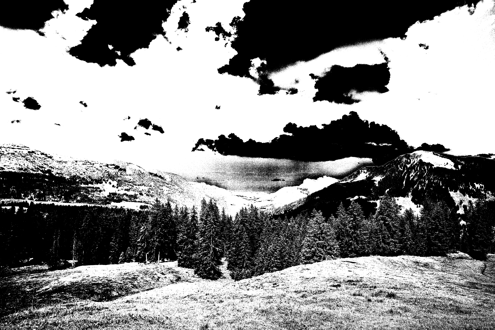
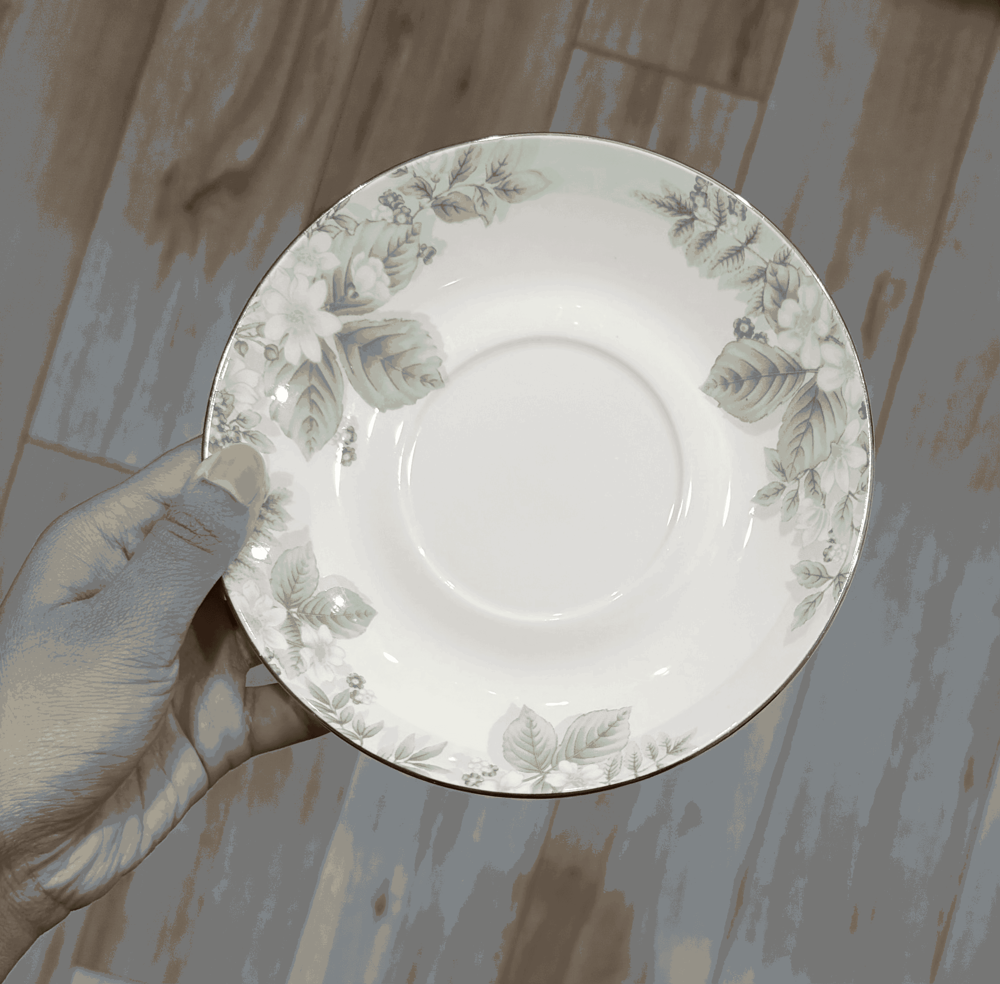
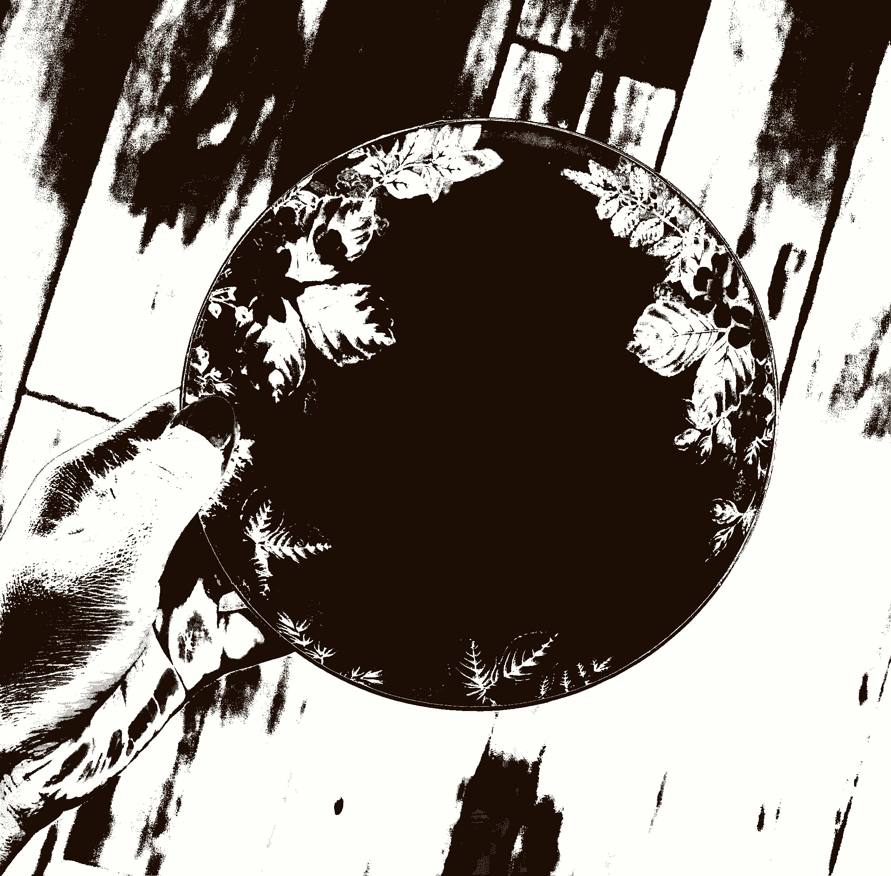
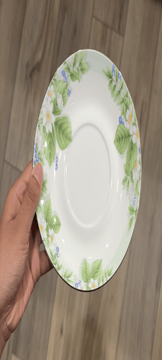

The purpose of this page is to explore how digital images
work on the web. By using two different pictures, I will
show the differences between image formats, image
dimensions, file sizes, and image quality. I will also
compare resizing images with CSS to resizing the actual
image file in an image editor. Finally, I will show
how changing an image's proportions can distort its
appearance and how enlarging a small image can reduce
its visible quality.
Exploring Image Formats and Resizing with a Pexels Picture
I chose this picture from Pexels because its
colors and fine details make it useful for comparing
image formats and image quality. The picture was
taken by Tobias Eicher, whose other pictures
can be explored on Pexels. The image depicts
a landscape with mountains and trees in the foreground.
The original file is JPG, measuring 6024x4024 pixels, with a
file size of 4.39 MB. Throughout this
section, I will compare the original picture with
converted, resized, distorted, and enlarged versions.
Original Image
The original picture is the starting point for
all the demonstrations in this section. The
original file is preserved so that the other
versions can be compared against it.
Original dimensions: 6024 × 4024 pixels.
Original format: JPG.
Original file size: 4.39 MB.
Photographer: Tobias Eicher.
Source: Pexels.
GIF conversion.
Grayscale version with shades of gray
instead of the original colors.

Black-and-white version created using a
threshold conversion.
JPEG is commonly used for photographs because it
supports lossy compression and can reduce file
sizes. GIF has a limited color
palette, which can reduce the detail in a
picture. Grayscale images retain brightness
information without color, while a threshold-based
black-and-white image contains only black and
white pixels. The final file sizes depend on
the image content, dimensions, format, and
compression settings.
Downsizing Images with CSS
CSS can change the displayed size of an image
without changing the actual dimensions of the
original file. In this example, the original
photograph is displayed at 600 pixels wide.
The height is set to auto so that the browser
preserves the original proportions.
The original high-resolution photograph
displayed at 600 pixels wide using CSS.
The source file retains its original
pixel dimensions and file size.
Although the photograph appears smaller on the
page, the browser still loads the original image
file. This means that CSS resizing changes the
displayed dimensions but does not reduce the
number of pixels stored in the source image.
Proper Reduction of Image with Editor
This version was resized in an image editor
rather than merely displayed at a smaller size
using CSS. The image editor reduced the actual
pixel dimensions while preserving the original
aspect ratio. The resulting file is approximately
600 pixels wide and 401 pixels tall.
Photograph resized to 600 × 401 pixels in
an image editor while maintaining its
original proportions.
Reducing the actual image dimensions can reduce
the amount of data that needs to be downloaded.
The final file size depends on the format,
compression settings, and image content. The
browser can still use CSS to control the
displayed dimensions and reserve space for
the image while the page loads.
Improper Image Proportions with CSS
An image becomes distorted when its width and
height are changed independently. The following
examples use the properly resized image but
deliberately set incorrect CSS dimensions.
The original resized image is 600 × 401 pixels.
Each example keeps one dimension the same while
changing the other dimension.
Distortion 1: The width remains
600 pixels, but the height is reduced
to 267 pixels, compressing the image
vertically.
Distortion 2: The width remains
600 pixels, but the height is reduced
further to 200 pixels.
Distortion 3: The height is
401 pixels, and the width is reduced
to 400 pixels, compressing the image
horizontally.
Distortion 4: The height is
401 pixels, and the width is reduced
further to 267 pixels.
These examples show why the aspect ratio must
be the same when resizing photographs for
websites. When both dimensions are set
separately, recognizable objects can appear
unnaturally short, tall, narrow, or wide.
These examples show why the aspect ratio must
be the same when resizing photographs for
websites. When both dimensions are set
separately, recognizable objects can appear
unnaturally short, tall, narrow, or wide.
Using a width with height set to auto is
generally a safer way to resize an image
without distortion.
Improper Enlarging with CSS
An image editor can reduce a photograph to a
much smaller number of pixels. If that smaller
image is enlarged in the browser, it may appear
less detailed than a larger source image
displayed at the same dimensions. The following
examples compare the properly resized image
with a version reduced to 25% of its width
and height.
Reference image: 600 × 401 pixels,
displayed at 600 pixels wide.
Reduced image: 150 × 100 pixels,
enlarged to 600 pixels wide. The
smaller source image may show less
detail and more visible pixelation.
Both images are displayed at approximately
the same dimensions, but their source files
contain different amounts of image information.
Enlarging the small version cannot restore
details that were lost when the image was
reduced.
Exploring Image Proportions with My Personal Geometry Picture
This picture was taken by me and has my hand holding a plate.
I selected this because the plate makes it easier to
identify changes in proportions. Unlike the Pexels
photograph, this image is my own. The
original file is PNG, measuring 2243x2209
pixels, with a file size of 2.14 MB.
I will use the picture to
demonstrate how image conversions, resizing, and
stretching affect a recognizable shape.
Original Image
This is my original picture of a my hand holding a plate.
The original image is shown so that its proportions can
be compared with the modified versions.
Original dimensions: 2243 × 2209 pixels.
Original format: PNG.
Original file size: 2.14 MB.
Photographer: Chelsi Ganugapanta.
Original personal photograph.
GIF conversion of the personal photograph.

Grayscale version showing shades of gray.

Black-and-white version created using
a threshold conversion.
The original photograph provides a reference
for the other versions. The grayscale version
removes color while retaining shades of gray,
whereas the black-and-white version uses only
black and white pixels. The final file
sizes depend on the format, dimensions, and
image content.
Downsizing Images with CSS
CSS can reduce the displayed size of the
original personal photograph without changing
the actual image file. Here, the image is
displayed at 600 pixels wide, and its height
is calculated automatically to preserve the
original proportions.
Original image of a hand holding a plate displayed
at 600 pixels wide using CSS. The original
file dimensions remain unchanged.
The browser displays the photograph at a
smaller size, but the original file is still
loaded. This demonstrates the difference
between changing the displayed dimensions
and reducing the actual number of pixels
in an image.
Proper Reduction of Image with Editor
This version of my personal picture was
resized in an image editor. The image's
actual pixel dimensions were reduced while
preserving its original aspect ratio. The
resized version is approximately 600 pixels
wide, with its height determined by the
original proportions.
Image of a hand holding a plate resized in an image
editor while preserving the original
proportions.
Unlike CSS resizing, editing the image
reduces the number of pixels stored in
the source file. This can reduce the
download size, depending on the format
and compression settings.
Improper Image Proportions with CSS
The following examples use the properly
resized personal photograph but change
its width and height separately.
These changes demonstrate how a circular
or square object can appear distorted
when its original proportions are not
preserved.
Distortion 1: The width remains
600 pixels, but the height is
reduced to 240 pixels.
Distortion 2: The width remains
600 pixels, but the height is
reduced further to 296 pixels.
Distortion 3: The height is
591 pixels, but the width is
reduced to 400 pixels.

Distortion 4: The height is
591 pixels, but the width is
reduced further to 267 pixels.
These examples demonstrate how independently
changing the width and height can distort
recognizable objects. A circular object
may appear oval, and a square object may
appear rectangular. Preserving the original
aspect ratio helps prevent these distortions.
Improper Enlarging with CSS
In this demonstration, the properly resized
personal photograph is compared with a
version that was reduced to 25% of its
original downsized width and height. Both
versions are displayed at approximately
the same size so that their quality can
be compared.
Reference image: the properly
resized personal photograph.
Reduced image: the 150 × 148-pixel
photograph enlarged to 600 pixels
wide, potentially showing less detail.
Enlarging a small image does not restore
the original detail. The smaller source
file contains fewer pixels, so the enlarged
version may appear blurrier or more
pixelated than the properly resized image.
This is especially noticeable when the
photograph contains fine details or
recognizable geometric shapes.